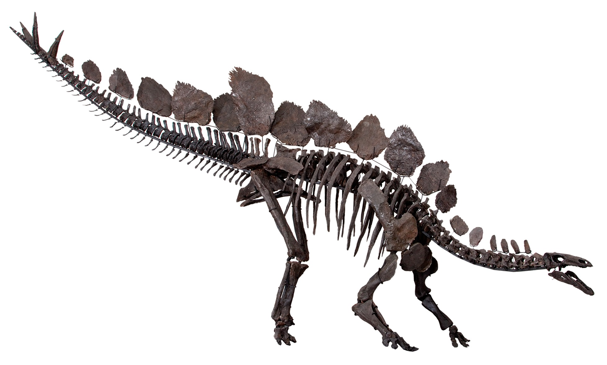

Þetta lítur út eins og fiðrildi.
En það er ekki fiðrildi!
Þetta lítur út eins og fiðrildi.
En það er ekki fiðrildi!

MyndSusannah Maidment et al. & Natural History Museum, London
LeyfiCC BY 4.0
FráWikimedia Commons
Þetta er Sophie.
Hún er kambeðla úr steini.